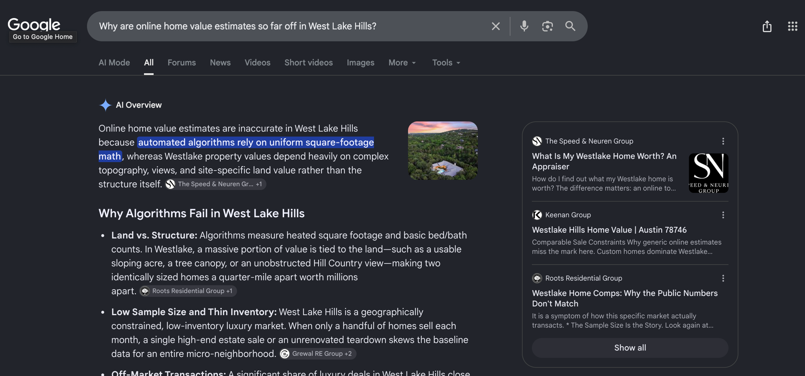
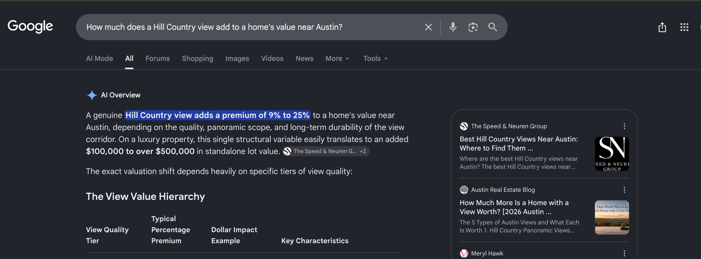
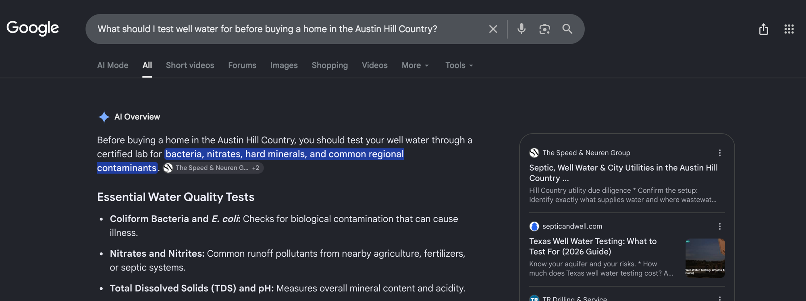
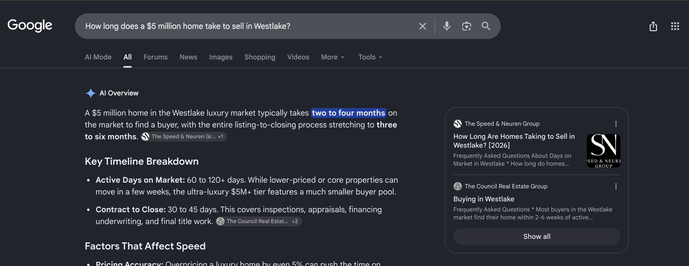
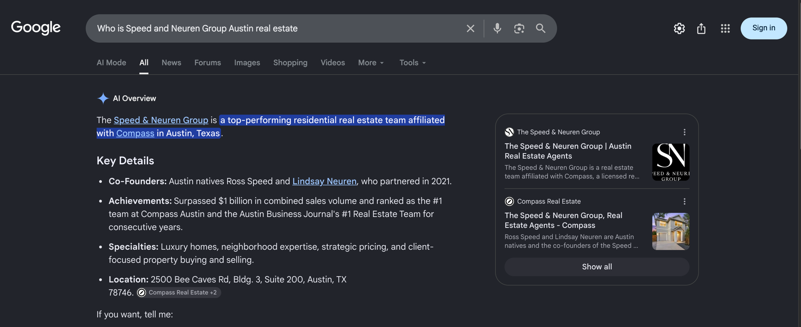

August 2026 | The Speed & Neuren Group
Executive summary
In August, speed-neurengroup.com was cited as a source on nineteen of the nineteen Austin questions we track. The tracked set grew during the month, so read it as two groups: seven of the seven questions carried through the whole cadence, which is the figure to judge August on and the one that is comparable next month, and twelve of the twelve buyer questions added at the end of the month and read on Perplexity and ChatGPT only. The questions that came back on both Perplexity and ChatGPT in the same month are the one that asks for the team by name, the question of whether Westlake is worth its price premium, Rollingwood, and the question of what a Hill Country view adds to a home’s value. We read the price premium question as the one with the most money attached, because it is what a buyer asks at the moment of deciding how far to stretch in the highest-value part of the market you serve.
Perplexity cited you on seventeen of the nineteen. On the established set that is the Hill Country and Lake Travis question, the Westlake price premium question, Rollingwood, Bee Cave, luxury Austin, relocation and the question that asks for the team by name; the rest sit in the buyer questions added at the end of the month. ChatGPT cited you on six of the nineteen, including the Westlake community question and the brand question. Those two counts are not a like-for-like pair, because the engines were read on a different number of occasions across the month, so read each one on its own rather than against the other.
Google has opened, on the specialist end of the book. Google wrote an AI Overview on every one of the twelve questions it was read on, and on five of those it drew on a page of yours. Four of the five are narrow, technical questions your guides were written for, and on all four Google put your name on the opening sentence of its own answer. The fifth is your team name. On the seven it still assembled from other sources, and those are the target. Questions read n/a in this column where no Google reading was taken at all, and they sit outside every Google figure rather than counting against you.
Twenty-three separate pages of your site were carried as a source this month rather than one or two: community and category guides across the set, plus the core pages the engines reach for when someone asks for the team by name. New pages went live during August, guides alongside the founder pages for Ross Speed and Lindsay Neuren, and one of the guides published during the month is already among the twenty-three earning citations in the same month.
Two notes on the tiles below. The Google tile counts Overview citations across all nineteen tracked questions, but Google was read on the seven in the established set only: it produced an Overview on twelve of those, so the working figure is five of twelve, and the twelve added questions read n/a rather than as misses. The clicks tile counts Google Search clicks to the whole site across the window shown, not only the nineteen questions tracked here.
Citation matrix
✓ Cited: your site is among the sources that answer drew on. These engines rebuild their answers on every search
– Not cited in that reading, which is one reading and not a settled absence for the month
◦ Google did not generate an AI Overview for this question, so there was no AI answer to be cited in
n/a Not read on that engine this month, so the cell is left blank rather than counted against you
| Buyer question | Google AI Overview | Perplexity | ChatGPT | |
|---|---|---|---|---|
| Who is Speed and Neuren Group Austin real estatespeed-neurengroup.com | ✓ | ✓ | ✓ | |
| Is Westlake worth the price premium in Austinspeed-neurengroup.com | – | ✓ | ✓ | |
| Living in Rollingwood Austin TX homes schoolsspeed-neurengroup.com | – | ✓ | ✓ | |
| Living in Westlake West Lake Hills Austin TX homes schoolsspeed-neurengroup.com | – | – | ✓ | |
| Austin Hill Country Lake Travis living guidespeed-neurengroup.com | – | ✓ | – | |
| Luxury real estate in Austin TX guidespeed-neurengroup.com | – | ✓ | – | |
| Living in Bee Cave TX near Austinspeed-neurengroup.com | – | ✓ | – | |
| Moving to Austin TX relocation guide 2026speed-neurengroup.com | – | ✓ | – | |
| Why is Lake Austin waterfront more expensive than Lake Travis waterfront?speed-neurengroup.com | n/a | ✓ | – | |
| Why are online home value estimates so far off in West Lake Hills?speed-neurengroup.com | ✓ | ✓ | – | |
| Can you run a short-term rental in West Lake Hills or Rollingwood?speed-neurengroup.com | n/a | ✓ | – | |
| What school district serves Steiner Ranch?speed-neurengroup.com | n/a | ✓ | – | |
| How much does a Hill Country view add to a home's value near Austin?speed-neurengroup.com | ✓ | ✓ | ✓ | |
| What is the difference between a MUD and a PID in Austin real estate?speed-neurengroup.com | n/a | ✓ | – | |
| What should I test well water for before buying a home in the Austin Hill Country?speed-neurengroup.com | ✓ | ✓ | – | |
| Do all Eanes ISD neighborhoods feed into Westlake High School?speed-neurengroup.com | n/a | ✓ | – | |
| How long does a $5 million home take to sell in Westlake?speed-neurengroup.com | ✓ | ✓ | – | |
| What schools do kids in Tarrytown, Austin go to?speed-neurengroup.com | n/a | ✓ | – | |
| Where in Austin can you actually live without a car?speed-neurengroup.com | n/a | – | ✓ |
Reading the matrix. A check mark means your site is among the sources that answer drew on. It does not mean your brand name is spelled out in the answer text. Nineteen of the nineteen questions are cited on at least one engine. The set grew this month, so the comparable figure is seven of the seven questions we have tracked all along; the other twelve are buyer questions added at the end of the month, read on Perplexity and ChatGPT only, and twelve of them came back cited. Perplexity carries seventeen, ChatGPT carries six, and Google carries five of the twelve questions it produced an Overview on, which is where the plan below is aimed. Most of these nineteen questions already map to a guide that is live or to the site itself, so an empty cell on those rows is a page to strengthen rather than ground you have not claimed. Two questions in the set have no page behind them yet, and both are briefed in the plan.
One note on the site itself before you read the columns. Both of the team’s alternate web addresses now redirect to speed-neurengroup.com, so everything below reads as one site under one address rather than as separate presences competing with each other. Two things are worth knowing about how to read the columns. Perplexity and ChatGPT were read on multiple days between August 7 and August 30. Google’s AI Overview column is different: it is a single reading of each question taken on August 30, read from the page itself rather than across the month, so treat it as a snapshot. A dash there means your site was not among the sources Google showed on that one reading, which is not the same as being absent for the month. Second, all three engines rebuild their answers on every run and Google localizes its answers by where the search is run from, so a check mark means your site was among the sources on at least one reading in that window, not that it appears on every run. The reverse matters just as much: a question without a mark is one we have not seen you carried on yet, not a settled absence, because a different reading on a different day can return a different set of sources. Source lists were read as first rendered, so any list of sources named here is what the engine showed first, not a complete inventory.
Story one
Perplexity cited speed-neurengroup.com on seventeen of the nineteen questions. On the set we have tracked all along that is the question that asks for the team by name, the Westlake price premium question, Rollingwood, the Hill Country and Lake Travis question, luxury Austin, Bee Cave and Austin relocation; the rest are buyer questions added at the end of the month, and the table below lists every one. In each row the third column names the page on your own site that this engine’s answer drew on, or the site itself where the answer named no single page.
| Buyer question | Status | Your page carried as the source |
|---|---|---|
| Who is Speed and Neuren Group Austin real estate | Cited | Home page who is ross speed austin real estate agent and co founder 2026 map search and four more |
| Is Westlake worth the price premium in Austin | Cited | living in westlake west lake hills austin tx homes schools neighborhoods 2026 what is my westlake home worth an appraiser led answer 2026 |
| Living in Rollingwood Austin TX homes schools | Cited | speed-neurengroup.com |
| Austin Hill Country Lake Travis living guide | Cited | austin hill country lake travis living the complete guide 2026 |
| Luxury real estate in Austin TX guide | Cited | luxury real estate in austin the insider guide 2026 |
| Living in Bee Cave TX near Austin | Cited | speed-neurengroup.com |
| Moving to Austin TX relocation guide 2026 | Cited | speed-neurengroup.com |
| Why is Lake Austin waterfront more expensive than Lake Travis waterfront? | Cited | austin hill country lake travis living the complete guide 2026 |
| Why are online home value estimates so far off in West Lake Hills? | Cited | what is my westlake home worth an appraiser led answer 2026 |
| Can you run a short-term rental in West Lake Hills or Rollingwood? | Cited | short term rental rules in austin and the hill country 2026 |
| What school district serves Steiner Ranch? | Cited | living in steiner ranch austin tx master planned hill country living 2026 |
| How much does a Hill Country view add to a home's value near Austin? | Cited | best hill country views near austin where to find them what they add 2026 |
| What is the difference between a MUD and a PID in Austin real estate? | Cited | mud vs pid in austin real estate what buyers need to know 2026 |
| What should I test well water for before buying a home in the Austin Hill Country? | Cited | septic well water city utilities in the austin hill country 2026 |
| Do all Eanes ISD neighborhoods feed into Westlake High School? | Cited | eanes isd attendance zones explained how they affect westlake home values 2026 |
| How long does a $5 million home take to sell in Westlake? | Cited | how long are homes taking to sell in westlake 2026 |
| What schools do kids in Tarrytown, Austin go to? | Cited | living in tarrytown austin tx historic luxury near lake austin 2026 |
Story two
Google wrote an AI Overview on every one of the twelve questions it was read on this month, and on five of them it drew on a page of yours. Google displays your site as The Speed and Neuren Group rather than as the domain, so that is the name to look for in a source list. Four of the five are the specialist questions your guides were written for: why online estimates miss in West Lake Hills, what a Hill Country view adds, what to test well water for, and how long a five million dollar Westlake home takes to sell. On all four the chip sits on Google’s opening sentence and your page is the first card in the source panel. The fifth is your own team name. All five are shown below.





None of them is a question about Austin in general. Each one is narrow, technical and expensive to get wrong: an appraisal gap, a view premium, a water test, a selling window at the top of the market. Your guides answer those directly and Google put your name on the opening line of its answer in all four. That is the shape worth repeating, and it is a better guide to September than any count in this report.
Three conditions, and all three sit on pages that are already published. The guides open with framing before they answer, so the direct answer is not in the opening lines where an engine reads for one. The headings describe a section rather than ask the question a buyer asks. And the record each page carries about itself leaves the image field empty and states a June publication date, including on guides that went live this month, so your newest work reads as older than it is. Every one of those is a correction to a live page rather than a new page to write, and the pages already cited show what happens when the answer is near the top.
Story three
ChatGPT cited speed-neurengroup.com on six of the nineteen questions. On the set we have tracked all along that is the question that asks for the team by name, the Westlake price premium question, the Westlake community question and Rollingwood; the rest sit in the buyer questions added at the end of the month, and the table below lists every one. The Westlake and Rollingwood rows are the core of the book rather than the edge of it.
| Buyer question | Status | Your page carried as the source |
|---|---|---|
| Who is Speed and Neuren Group Austin real estate | Cited | Home page about ross and lindsay contact and two more |
| Is Westlake worth the price premium in Austin | Cited | speed-neurengroup.com |
| Living in Rollingwood Austin TX homes schools | Cited | living in rollingwood austin tx homes schools lifestyle 2026 |
| Living in Westlake West Lake Hills Austin TX homes schools | Cited | living in westlake west lake hills austin tx homes schools neighborhoods 2026 |
| How much does a Hill Country view add to a home's value near Austin? | Cited | best hill country views near austin where to find them what they add 2026 |
| Where in Austin can you actually live without a car? | Cited | the most walkable neighborhoods in austin 2026 ?utm_source=openai |
Pages earning citations
These are the pages on speed-neurengroup.com that an AI answer was built on this month, and the number of tracked questions each one was carried as a source on. Some are guides we published for you and some are pages that were already on your site, which is worth seeing: your own core pages are being reached for on the team and contact questions while the published guides carry the neighbourhood, relocation and buyer-research ones.
| Your page | Questions cited on | Questions it answered | Where to check it |
|---|---|---|---|
| living in westlake west lake hills austin tx homes schools neighborhoods 2026 | 2 | Is Westlake worth the price premium in Austin; Living in Westlake West Lake Hills Austin TX homes schools | ChatGPT, Perplexity |
| what is my westlake home worth an appraiser led answer 2026 | 2 | Is Westlake worth the price premium in Austin; Why are online home value estimates so far off in West Lake Hills? | Google AI Overview, Perplexity |
| austin hill country lake travis living the complete guide 2026 | 2 | Austin Hill Country Lake Travis living guide; Why is Lake Austin waterfront more expensive than Lake Travis waterfront? | Perplexity |
| Home page | 1 | Who is Speed and Neuren Group Austin real estate | ChatGPT, Google AI Overview, Perplexity |
| who is ross speed austin real estate agent and co founder 2026 | 1 | Who is Speed and Neuren Group Austin real estate | Perplexity |
| map search | 1 | Who is Speed and Neuren Group Austin real estate | Perplexity |
| meet jennifer holbert | 1 | Who is Speed and Neuren Group Austin real estate | Perplexity |
| meet lindsay neuren | 1 | Who is Speed and Neuren Group Austin real estate | ChatGPT, Perplexity |
| meet ross speed | 1 | Who is Speed and Neuren Group Austin real estate | ChatGPT, Perplexity |
| meet the team | 1 | Who is Speed and Neuren Group Austin real estate | Perplexity |
| about ross and lindsay | 1 | Who is Speed and Neuren Group Austin real estate | ChatGPT |
| contact | 1 | Who is Speed and Neuren Group Austin real estate | ChatGPT |
| living in rollingwood austin tx homes schools lifestyle 2026 | 1 | Living in Rollingwood Austin TX homes schools | ChatGPT |
| luxury real estate in austin the insider guide 2026 | 1 | Luxury real estate in Austin TX guide | Perplexity |
| short term rental rules in austin and the hill country 2026 | 1 | Can you run a short-term rental in West Lake Hills or Rollingwood? | Perplexity |
| living in steiner ranch austin tx master planned hill country living 2026 | 1 | What school district serves Steiner Ranch? | Perplexity |
| best hill country views near austin where to find them what they add 2026 | 1 | How much does a Hill Country view add to a home's value near Austin? | ChatGPT, Google AI Overview, Perplexity |
| mud vs pid in austin real estate what buyers need to know 2026 | 1 | What is the difference between a MUD and a PID in Austin real estate? | Perplexity |
| septic well water city utilities in the austin hill country 2026 | 1 | What should I test well water for before buying a home in the Austin Hill Country? | Google AI Overview, Perplexity |
| eanes isd attendance zones explained how they affect westlake home values 2026 | 1 | Do all Eanes ISD neighborhoods feed into Westlake High School? | Perplexity |
| how long are homes taking to sell in westlake 2026 | 1 | How long does a $5 million home take to sell in Westlake? | Google AI Overview, Perplexity |
| living in tarrytown austin tx historic luxury near lake austin 2026 | 1 | What schools do kids in Tarrytown, Austin go to? | Perplexity |
| the most walkable neighborhoods in austin 2026 | 1 | Where in Austin can you actually live without a car? | ChatGPT |
Gaps as opportunities
The largest lever in September is not writing. Your guides are already live, and pages from that set were carried as a source across the tracked questions this month, alongside the core pages that answer the brand question. The guides still to publish are finished and checked and follow the same pattern that is already earning, so going live is the whole task. Everything after that is a short list of single-field corrections that let the engines read all of it as one team rather than as a stack of separate pages.
Every remaining guide is written, checked and ready to publish, in publishing order, with every internal link resolving and every image in place. What we commit to in September is the group we can publish on our own regardless of anyone else: Northwest Hills first, then the guides that carry the internal links into Tarrytown and Lakeway. Northwest Hills leads because it is the one guide still to publish that carries Lindsay Neuren’s individual record and the shared team identifier, so publishing it closes a page gap and starts joining the site into one record in the same move. The rest of the guides go live in a single run within days of the two items in the next card being cleared. None of this needs new content.
Two corrections belong to whoever hosts the site and both are small. The first is the reason August had to be published one page at a time rather than in one run: the server drops the authorization header before the site can read it, so the automated publishing path never gets through and each guide has to be entered field by field. One line of server configuration turns that into a single unattended run. The second is that every address which does not exist returns the home page with a success response instead of a not-found. That hides broken links from everyone, and a set of new addresses is about to go live behind it, so it is worth closing first. We can supply the exact configuration line on request. To keep the September publishing on schedule, both need to be in place in the first week of the month.
Each live guide describes the team correctly, and describes it anonymously, so the guides read as separate mentions of a similarly named team rather than as pages of one team. The founder pages for Ross Speed and Lindsay Neuren already define the stable identifiers, so the work is pointing the guides at them. Two related items go in the same pass. The founder pages currently name a shorter address than the one they publish at, which is a single field on each page. And the site-wide record and the guides list two different sets of team profiles, so we settle on one list. The web addresses are consolidated, which was the largest single piece. What remains is joining the published pages to that one record, so every surface points back to the same team.
Both community guides are live, and neither is earning on its own community question: the Lakeway guide has not been carried as a source at all, and the Tarrytown guide has been carried only on a schools question added at the end of the month. The cause is that almost nothing on the site links to them. Several of the guides still to publish carry the internal links into Tarrytown and Lakeway, and every one of those is written and ready. Publishing that group ahead of the rest is the fix, which makes this a sequencing decision rather than new work, and it puts support behind two communities you have already invested guides in.
Google is building an AI answer on twelve of the seven questions it was read on, and all but two of the nineteen already have a page behind them, so the September pass on those pages is about how they open rather than what they cover: the direct answer in the first lines, and headings shaped as the question a buyer actually asks. In the same pass we fill the image field and set the real publication date on every live guide, so the work that went out this month reads as this month’s. That leaves the two tracked questions with no page behind them anywhere, on Austin luxury neighborhoods and on moving to Austin from California, and those two are the clean brief for the next writing block.